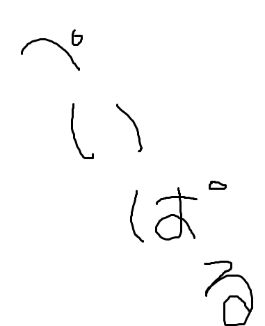

寄付のご案内
はじめに
私たちがロケット開発で使用する費用は主に大学からの支。
さらに高高度へロケットを打ち上げるための開発を進めている
ロケットの大型化をするとコンポーネントあたりの開発費が増加する。
安全の確保やデータ取得を目的とする設備投資。
支援では賄いきれない設備投資費や開発費で支援をいただきたい。
大学からの支援でロケット開発を進めている。
さらに高高度へロケットを打ち上げるための開発を進めている
ロケットの大型化をするとコンポーネントあたりの開発費が増加する。
安全の確保やデータ取得を目的とする設備投資。
支援では賄いきれない設備投資費や開発費で支援をいただきたい。
私たちは、
大型エンジンの打上成功を踏まえ、さらに高高度へロケットを打ち上げるための開発を進めています。
ロケットの大型化に
発生するいちコンポーネントあたりの開発費や設備投資にかかる費用は
私たちはロケットの大型化に伴う以下の問題を抱えています。
目的とする寄付をお願いしています。
▼ コンポーネントあたりの開発費の増加
▼ データ習得に必要な設備への投資
つきましては、研究開発の充実・発展を目的とする寄付をお願いしています。
現在TSRPでは大型エンジンの足掛かりとなるL型エンジンの開発に成功し、
さらなる大型エンジンの開発に着手するなどロケットの大型化を進めています。
▼ 一機あたりの開発費
▼ 設計に必要なデータ習得のための計測機器費
この大型化が進むにつれ開発費の増加が表れています。
しかし、予算が限られている中での開発費の増大は各所で予算不足を招きます。
限られた予算で開発を進めることは大変重要だとは考えておりますが、ロケットを製作する予算を割り当てると
必要な研究・開発に割り当てる予算が不足している状態です。
つきましては、TSRPは研究開発の充実・発展を目的とする寄付をお願いしています。
らっこ
寄付方法
・一般寄付
用途を指定しない寄付です。
・指定寄付
TSRPが現在特定して資金が不足している対象に対しての寄付です。
現在の指定寄付一覧
・オープニングショック研究(不知火)
・M型モータ開発(モータ)

Copyright (C)1999-2014 TSRP All Right Reserved.
If you have opinion etc... :tokai.srpあっとgmail.com